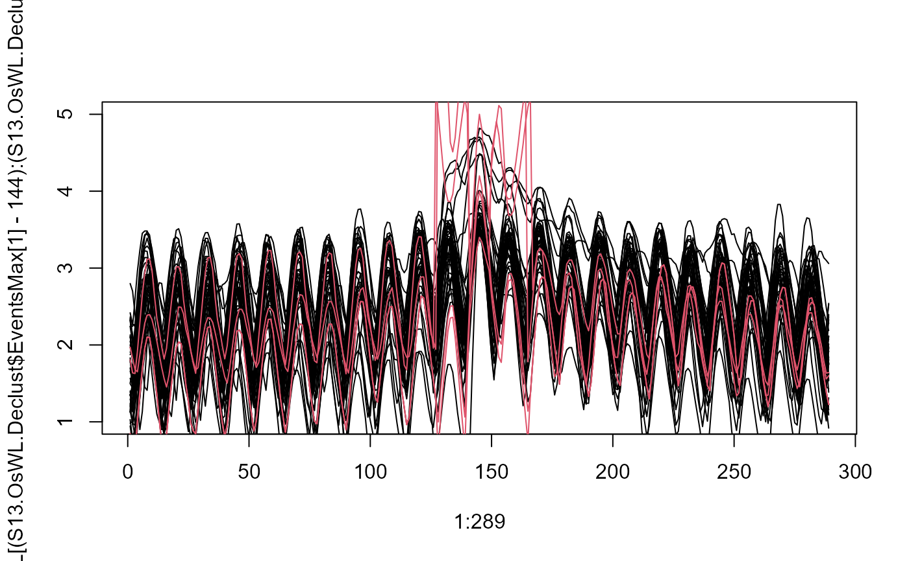

WL_Curve.RdGenerates water level curves for simulated extreme water levels based on a simulated "intensity".
WL_Curve(
Data,
Cluster_Max,
Pre_Low,
Fol_Low,
Thres,
Base_Line = mean(Data$OsWL, na.rm = T),
Limit,
Peak,
Intensity,
Length = 144
)A data frame of the time series with the column containing ocean-side water levels labeled "OsWL".
Numeric vector containing indexes of peaks in the O-sWL column of Data. If analyzing a sample conditioned on O-sWL derived using Con_Sample_2D() set equal to the $x.con output.
Numeric vector of the indexes of the O-sWL column in Data containing the preceding low water level.
Numeric vector of the indexes of the O-sWL column in Data containing the following low water level.
Numeric vector of length one, specifying threshold above which to apply the method. Below the threshold an observed curve with an intensity less than limit is randomly sampled.
Numeric vector of length one, specifying water level about which to calculate the intensity. Default is the mean O-sWL.
Numeric vector of length one, specifying an upper limit on the observed water level curve intensities to sample for simulated peaks less than Thres.
Numeric vector of simulated peak water levels.
Numeric vector of the intensity associated with each simulated Peak.
Numeric vector of length one, specifying the length of time over which the water level curve is simulated before (and after) the time of the simulated peak. Total duration of the water level curve is 2*Length+1. Minimum is 5. Default is 144.
A data frame, where each row contains the water level curve generated for corresponding simulated peak in the Peak input. A vector of the intensity Intensity of the generated water level curve.
#Declustering O-sWL series
S13.OsWL.Declust = Decluster(Data=S13.Detrend.df$OsWL,
SepCrit=24*7, u=0.99667)
#Use O-sWL intensity function to obtain index of preceding and following low water levels
intensity = OsWL_Intensity(Data=S13.Detrend.df,Cluster_Max=S13.OsWL.Declust$EventsMax)
#Four synthetic events
sim.peaks = c(3.4,4,4.2,5)
sim.intensity = c(38,48,120,140)
#Generating the water level curves
oswl_ts_oswl = WL_Curve(Data = S13.Detrend.df,
Cluster_Max = S13.OsWL.Declust$EventsMax,
Pre_Low = intensity$Pre.Low,
Fol_Low = intensity$Fol.Low,
Thres = S13.OsWL.Declust$Threshold, Limit = 45,
Peak = sim.peaks,
Intensity = sim.intensity)
#Plot the water level curves of the observed peaks
plot(1:289,
S13.Detrend.df$OsWL[(S13.OsWL.Declust$EventsMax[1]-144):
(S13.OsWL.Declust$EventsMax[1]+144)],
type='l',ylim=c(1,5))
for(i in 2:length(S13.OsWL.Declust$EventsMax-144)){
lines(1:289,
S13.Detrend.df$OsWL[(S13.OsWL.Declust$EventsMax[i]-144):
(S13.OsWL.Declust$EventsMax[i]+144)])
}
#Superimpose the curves generated for the four synthetic events
for(i in 1:4){
lines(1:289,oswl_ts_oswl$Series[i,],col=2)
}
